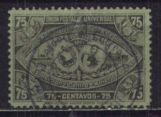

(Bogus issues)
Return To Catalogue - Guatemala 1871-1878 - Guatemala 1879-1885 - Guatemala 1886-1896 - Guatemala miscellaneous
Note: on my website many of the
pictures can not be seen! They are of course present in the
catalogue;
contact me if you want to purchase the catalogue.
For stamps of Guatemala issued from 1879 to 1896, click here.

1 c black on lilac 2 c black on grey 6 c black on orange 10 c black on blue 12 c black on red 18 c black on grey 20 c black on red 25 c black on brown 50 c black on brown 75 c black on grey 100 c black on green 150 c black on red 200 c black on red 500 c black on green
Value of the stamps |
|||
vc = very common c = common * = not so common ** = uncommon |
*** = very uncommon R = rare RR = very rare RRR = extremely rare |
||
| Value | Unused | Used | Remarks |
| 1 c | * | c | |
| 2 c | * | * | |
| 6 c | c | c | |
| 10 c | c | c | |
| 12 c | ** | * | |
| 18 c | *** | *** | |
| 20 c | ** | ** | |
| 25 c | ** | * | |
| 50 c | ** | * | |
| 75 c | RR | RR | |
| 100 c | ** | * | |
| 150 c | RR | RR | |
| 200 c | ** | * | |
| 500 c | ** | * | |
Surcharged
(Sorry, no picture available yet)
'UN CENTAVO 1898' (UN CENTAVO in two lines) on 12 c red
Value of the stamps |
|||
vc = very common c = common * = not so common ** = uncommon |
*** = very uncommon R = rare RR = very rare RRR = extremely rare |
||
| Value | Unused | Used | Remarks |
| 1 c on 12 c | * | * | |
(Bogus issues)
A '1 UN CENTAVO 1 1898' on 12 c red and a 'UN CENTAVO 1898' (UN CENTAVO in one line) on 12 c red exist, but are bogus issues.
(Telegraph stamps)
Postal stationary in the same design:

(Forgery with removed 'Telegrafos' overprint)
I have seen several forgeries with the 'Telegrafos' overprint removed pretending to be postage stamps, the above forgery is such a stamp of a 75 c value. The red telegraph overprint was removed from the 18 c, 75 c and 150 c in this way.

Private overprint 'Servicio interno' in red on 1 c black.
Fiscal stamp of 1897


'CORREOS NACIONALES' on 1 c blue 'CORREOS NACIONALES 2 centavos' on 1 c blue 'CORREOS NACIONALES 1902 UN 1 CTV' on 1 c blue 'CORREOS NACIONALES 1902 DOS 2 CTS' on 1 c blue
Value of the stamps |
|||
vc = very common c = common * = not so common ** = uncommon |
*** = very uncommon R = rare RR = very rare RRR = extremely rare |
||
| Value | Unused | Used | Remarks |
| 1 c | * | * | Exists with inverted overprint: *** |
| 2 c on 1 c | * | * | Exists with inverted overprint: ** |
| 1 c on 1 c | * | * | Exists with inverted overprint: R |
| 2 c on 1 c (1902) | * | * | Exists with inverted overprint: R |
Fiscal stamp of 1898 overprinted 'CORREOS NACIONALES'

1 c (overprint red) on 10 c black
2 c on 1 c red
(a red overprint is a bogus issue)
2 c (overprint red) on 5 c violet
(a black overprint is a bogus issue)
2 c (overprint red) on 10 c grey
(a black overprint is a bogus issue)
2 c on 25 c orange
2 c (overprinted red) on 50 c blue
6 c on 1 P violet
6 c on 5 P blue
6 c on 10 P green
Value of the stamps |
|||
vc = very common c = common * = not so common ** = uncommon |
*** = very uncommon R = rare RR = very rare RRR = extremely rare |
||
| Value | Unused | Used | Remarks |
| 1 c on 10 c | * | * | |
| 2 c on 1 c | * | * | |
| 2 c on 5 c | * | * | |
| 2 c on 10 c | ** | ** | |
| 2 c on 25 c | ** | ** | |
| 2 c on 50 c | *** | *** | |
| 6 c on 1 P | ** | ** | |
| 6 c on 5 P | *** | *** | |
| 6 c on 10 P | *** | *** | |
Fiscal stamp of 1898 overprinted 'CORREOS 1902 Seis 6 Cts.' on 25 c orange
Value of the stamps |
|||
vc = very common c = common * = not so common ** = uncommon |
*** = very uncommon R = rare RR = very rare RRR = extremely rare |
||
| Value | Unused | Used | Remarks |
| 6 c on 25 c | ** | ** | |
1 c green and lilac 2 c red and black 5 c blue and black (Palacio de la Reforma) 6 c olive and green (Palacio de Minerva) 10 c orange and blue (Lag de Amatitlan) 12 1/2 c blue and black (independencia, 1907) 20 c red and black (la cathedral) 25 c blue (1911) 50 c brown and blue (Teatro Colon) 75 c violet and black (Cuartel de Artilleria) 1 P brown and black 2 P red and black Overprinted


25 c on 2 c with New York arrival cancel
'1908 UN 1 UN CENTAVO' on 10 c orange and blue '1908' and 2 c (overprint red) on 12 1/2 c blue and red '1908' and 6 c on 20 c red and black '1909' and 2 c (overprint red) on 75 c violet and black '1909' and 6 c (overprint black or red) on 50 c brown and blue '12 1/2 CENTAVOS 1909' on 2 P red and black '1912 1 CENTAVO 1' on 20 c red and black '1912 1912 2 CENTAVOS 2' on 50 c brown and blue '5 5 CINCO CENTAVOS 1912' (black or red) on 75 c violet and black '1913 UN CENTAVO' on 50 c brown and blue '1913' and 6 c (green) on 1 P brown and black '1913 12 1/2 CENTAVOS' on 2 P red and black 'DOS CENTAVOS' on 1 c green and red (1916) 'SEIS CENTAVOS' on 1 c green and red (1916) '12 1/2 CENTAVOS' (black or red) on 1 c green and red (1916) '25 CENTAVOS' on 2 c red and black (1916) '= 25 = Centavos' on 2 P red and black (1920) '1921' and 12 1/2 c on 20 c red and black '1921 Cincuenta centavos' on 75 c violet and black '1922 DOCE Y MEDIO CENTAVOS' on 20 c red and black Overprinted and surcharged

'DOS CENTAVOS' and 'Correos de Guatemala 1911' (red) on 5 c blue and black 'SEID CENTAVOS' and 'Correos de Guatemala 1911' (red) on 10 c orange and black

Forged inverted '5 5 CINCO CENTAVOS 1912' overprint on 75 c

6 c brown and black Overprinted
'1911 Un Centavo' on 6 c brown and black

25 c blue and black (building) 25 c blue and brown (re-election of President Cabrera, 1917) 1$50 blue (1918) 5 $ red (President facing the left)
A stamp similar to the 25 c blue and brown, but in the value 12 1/2 c is a fiscal stamp.

12 1/2 c red 30 c red and black 60 c olive and black 90 c brown and black 3 P green and black Overprinted

'1920' (in blue on top) and '2 centavos' on 30 c red and black '1920' (in red at bottom) and '2 centavos' on 60 c olive and black '1922 DOCE Y MEDIO CENTAVOS' (red) on 60 c olive and black '1922 DOCE Y MEDIO CENTAVOS' on 90 c brown and black '1922 DOCE Y MEDIO CENTAVOS' on 3 $ green and black '1922 25 CENTAVOS' (black, blue or red) on 60 c olive and black '1922 25 CENTAVOS' (black, blue or red) on 90 c brown and black '1922 25 CENTAVOS' (black or blue) on 3 $ green and black
The '1922 25 CENTAVOS' overprint exist in several types.

90 c value overprinted 'Timbre Fiscal. UN PESO Acuerdo de 4
Deciembre 1920.' (fiscal stamp)
25 c green Surcharged '1921 CORREOS' on 25 c green '1921 CORREOS DOCE Y MEDIO' (red or black) on 25 c green
1.50 P blue and orange 5 P brown and green 15 P black and orange (railway bridge)


{kind=link}